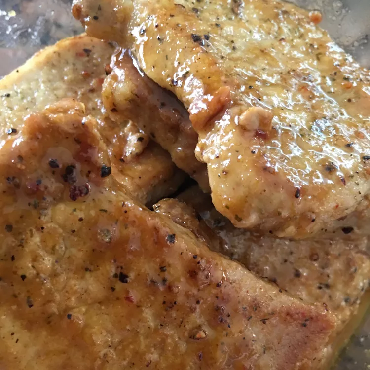

Recetas de Odin
Honey Mustard Pork Chops
Description:
These honey-mustard pork chops are a quick, easy, and tasty way to prepare boneless pork chops.

- Prep Time: 10 mins
- Cook Time: 20 mins
- Total Time: 30 mins
- Servings: 4
Ingredients
- 1/4 cup honey
- 2 tablespoon prepared yellow mustad
- 1 tablespoon butter
- 1 1/2 pounds center-cut boneless pork chops - 1/2 inch thick
- garlic powder, or to taste
Directions
- Step 1: Mix honey and mustard together in a small bowl until thoroughly combined.
- Step 2: Heat butter in a skillet over medium-high heat. Add pork chops and sprinkle with 1/2 of the garlic powder; cook until browned, about 3 minutes. Turn chops over, sprinkle with remaining garlic powder and cook for 3 more minutes.
- Step 3: Brush honey-mustard sauce over chops, turn them over, and cook for 5 minutes; turn chops onto the other side and brush with honey-mustard sauce. Cook until chops are no longer pink inside and an instant-read meat thermometer inserted into the thickest part of a chop reads 145 degrees F (63 degrees C), about 5 more minutes.
Editor's Note:
Please note the addtion of some spices and fresh herbes when using the magazine version of this recipe
Nutrition Facts
- 287 Calories
- 14g Fat
- 18g Carbs
- 22g Protein
Home